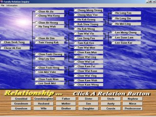

Artificial Intelligent Projects ...
Year: 2008
Programming Language & Tools: Microsoft .NET C#
Title: Optimization Using Genetic Algorithm In C#
This is a Multivariate Analysis Solver using Genetic Algorithm (GA) methodology. Assume we have certain number of farm lands (in area). Each land contain 2 types of insect. Assumed we have certain number of fertilizer to be chosen to use where each of them having different cost (per area) and killing effectiveness (in %) for each type of insects. By using GA, we want to find out, which fertilizer used for each land will satify minimum insects of number with minimum cost of fertilizer.
More ...
Year: 2007
Programming Language: Microsoft .NET C#
Title: ADALINE TDL Neural Network Simulation
As we know, neural network is a mathematic model that can be trained in order to "learn" certain information and able to perform some so called "intelligent" decision such as recognizing certain data pattern or understand certain object in a picture. This Tapped Delay Line (TDL) neural network is using the previous value on a graph to train it and used to predict a furture value. When you try to run the simulation application, try to observe that the average error values will decrease when the iteration increase. You can try to use differerent data set and observe how the ADALINE TDL neural net perform its prediction. The weight values of the neural net will become stable while the error of prediction value is low. Observing that the predicted value (graph blue in color) is not overlap with the actual value (graph in yellow color) at the beginining. However, it will slowly overlap each and other after some iteration. This is because the neural net has been trained and recongnize the pattern of the given graph. More ...
Year: 2005 - 2006
Programming Language: Microsoft .NET C#
Title: Genetic Algorithm (GA) In Solving Vehicle Routing Problem
This simulation was developed to learn Genetic Algorithm and coded in Ms. Net C#. The problem was to solve the optimal vehicle routing. In order to implement and visualize how GA is performing, the simulator was impemented with a random generated map. Users can actually provide the number of locations they wants and the number of roads connecting to each location. The map generator will generate a map with the respective setting.
Several parameters need to be provided before performing the GA to solve the problem. The parameters are basically the GA required parameters, such as Population size, Cross-Over Rate, Mutation Rate and Number of Generation. User need to determine the source and destination on the map before simulating the solutions. The system finally will give a path that connecting the source and destination location as well as the distance and traveling time. The goal is to get the shortest and fastest route for traveling from a source location to destination location. More ...
Year: 2002
Programming Language: MS. Visual C++ Ver 6.0
Title: AI 8-puzzle (8 Puzzle) solver
System allows user to input 8-puzzle question and solve it using various AI algorithms. The AI algorithms that chosen are commonly used to solve this kind of puzzle problem. Fundamental of AI solutions is actually let the computer to generate the potential solutions and search a correct one using some heuristic mechanism. AI algorithm which can minimize the solutions space and has the fastest searching mechanism will eventually become the best method. These methods were explored and implemented. They were: Blind Breath-First Search, h=Sum(step tiles from origin), h=Num. of Title not in place, Manhattan Distance Heuristic and A* Searching Algo (A Star Algorithm). Blind search is actually the worse algoritm in this scenario while the A* algorithm is the best. You may test it using this system by observing the time unit that the computer used, the exposed solutions and the solution steps obtained by different algo.
More ...
Year: 2000
Programming Language: Java
Title: Printer Troubleshoot Expert System
Expert - a person who is very knowledgeable about or skilful in a particular area. Time is needed for a person to become an expert in a particular domain. If an expert does not pass his or her expertise to others, the knowledge might lose forever. When people talk about expert, the first thing that comes in mind is some bombastic profession such as doctor, scientist and maybe engineer. Although most of these professional can be considered as expert, but there still having other type of expert. For example, a cooker who can prepare very good curry can be also considered as an expert in making curry. An expert system will try to encode these expertise into its own knowledgebase. With this knowledge, an expert system is capable to act like an expert in a particular domain.
In this project, an expert system in printer troubleshooting domain was built. This expert system is capable in diagnose a printer problem and providing a solution base on the found problems. Another advance feature of this expert system is, the expert system is capable in processing natural language. A user needs only to input the problem description in natural language. Then the expert system will try to understand the problem and derive a solution for it.
More ...

Year: 2000
Programming Language: Visual Prolog 5.1
Title: Simple Family Relation System
Another assignment proposed during I was studying at University of Malaya, in AI course. Students are requested to produce a family relationship application using Visual Prolog 5.1. Within a month, I tried to study Visual Prolog program and try to create that. Visual Prolog infact a very interesting programming language and it is total AI-based. By using various of AI techniques and concepts, the system is built with various functionalities; such as the system is able to tell the user about the relationship between any members in a family tree that has been chosen.
In addition, by choosing any member in the family tree (using mouse right click function), the system will be able to tell further information of the chosen member. For example, information like how many children or how many daughter and son does the member is having. If the user chooses to display a family member where he is actually a grandfather, then the system is able to show how many grandchildren do his own and how many son or daughter he is having as well.
More ...